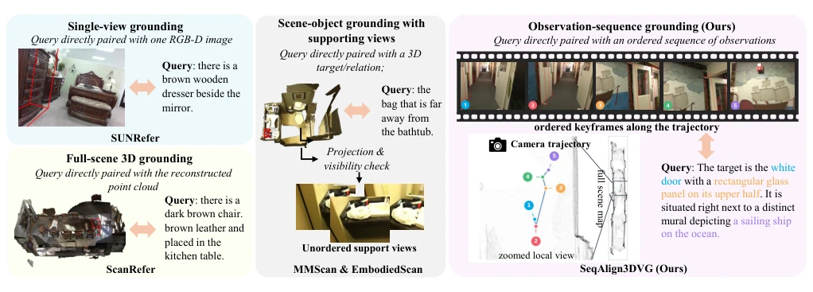
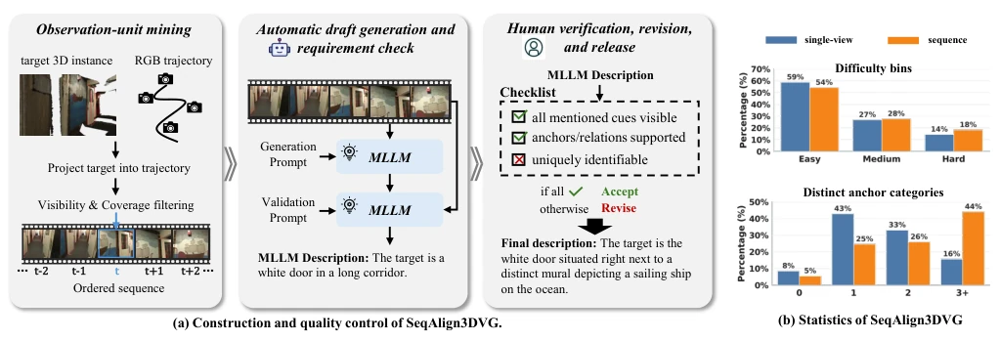
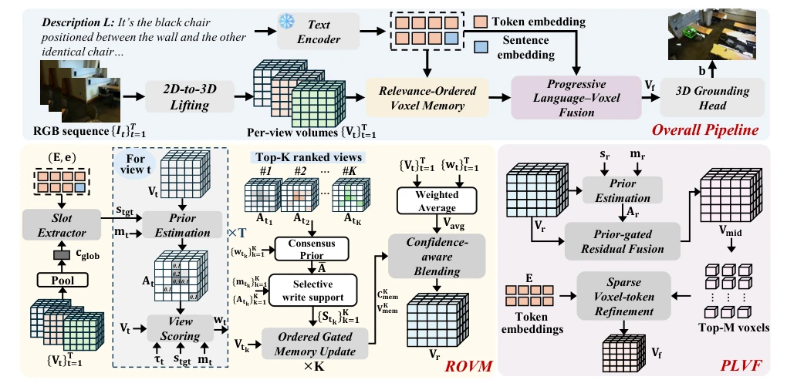

SeqAlign3DVG: A Sequence-Aligned Benchmark and Voxel Reasoning Framework for 3D Visual Grounding
Yi Zhang, Yi Wang, Yueting Wu, Kaiyue Yang, Yuejiao Su, Lap-Pui Chau abspdf
论文点评Review
这篇论文给具身 AI 的 3D 视觉定位领域泼了一盆“清醒水”。SeqAlign3DVG 数据集确实解决了老 benchmark 里“图文不对版”的顽疾，不再是用全局点云糊弄事，而是严格对齐观测序列，确保语言描述的特征在提供的帧里真能看见。不过，作者吹嘘的“depth-free”其实还得依赖相机位姿，真·无监督 SLAM 还得再等等。方法上，Voxel 方案虽然稳健，但计算量比 Transformer 大，ROVM 和 PLVF 设计精巧，感觉像是给模型加了个“记忆宫殿”和“显微镜”，在复杂场景下确实能看清细节，但在实时性要求高的机器人上，这 60ms 的延迟会不会让机器人反应慢半拍？总之，Benchmark 是实打实的贡献，方法则是稳健有余、效率待考，适合离线评估而非实时控制。
This paper pours a bucket of "sobering water" onto the field of 3D visual localization for embodied AI. The SeqAlign3DVG dataset indeed solves the chronic problem of "text-image mismatch" in old benchmarks, no longer using global point clouds to sloppily handle matters, but strictly aligning observation sequences, ensuring that features described in language can truly be seen in the provided frames. However, the author's boast of "depth-free" actually still relies on camera poses, true unsupervised SLAM still has to wait. In terms of method, the Voxel scheme is robust, but the computational load is larger than Transformer, ROVM and PLVF are designed ingeniously, feeling like adding a "memory palace" and "microscope" to the model, it can indeed see details in complex scenes, but on robots with high real-time requirements, will this 60ms latency make the robot react half a beat slow? In short, the Benchmark is a solid contribution, the method is robust but efficiency remains to be tested, suitable for offline evaluation rather than real-time control.
Existing 3D visual localization benchmarks (such as ScanRefer [4]) mostly rely on reconstructed global scenes, ignoring the fact that embodied agents can only see locally in real environments, and viewpoints change over time. Although EmbodiedScan [22] and MMScan [19] introduce multi-views, the supported views are "unordered sets", and language annotations are often based on scene-level targets, rather than specific observation frames, leading to "text-image mismatch"—features described might not be visible at all in the provided frames. This observability mismatch makes the model learn a "global god's eye view" during training, but can only "blind men touching an elephant" during testing. Furthermore, existing work ignores the dynamics of time series, unable to simulate how agents gradually eliminate ambiguity through continuous observation. Therefore, building a benchmark that strictly aligns observation sequences and contains temporal information is crucial for evaluating real embodied perception capabilities, otherwise the model just learns to "guess" rather than "see".

Figure 1: Benchmark taxonomy by what the query is directly paired with. Unlike prior works relying on global scenes or unordered views, our SeqAlign3DVG ensures strict alignment between queries and observation sequences or single views.

Figure 2: (a) Construction pipeline. Candidate views/sequences are paired with draft descriptions and human-verified against strict observability criteria. (b) Dataset statistics, illustrating the distribution of difficulty levels and anchor categories.
方法Method
整体流程分为四步：2D 到 3D 体素特征提升、ROVM 序列聚合、PLVF 语言融合、3D 定位头。首先，利用相机投影将每帧 RGB 特征提升到统一体素网格。核心创新在于 ROVM（相关性有序体素记忆），它不盲目融合所有帧，而是先通过查询生成目标先验，对视图按相关性排序，再按顺序保守更新记忆，防止低质量视图覆盖高质量证据。接着是 PLVF（渐进语言 - 体素融合），先用压缩的文本槽生成粗略假设，再仅在候选体素上进行稀疏的 Token 级交叉注意力，兼顾精度与效率。最后通过 FPN 和检测头输出 3D 框。这种设计既利用了时序信息，又避免了全网格计算，特别适合处理遮挡和复杂关系，比传统的全局注意力更聚焦。
The overall process is divided into four steps: 2D to 3D voxel feature uplift, ROVM sequence aggregation, PLVF language fusion, 3D localization head. First, use camera projection to uplift RGB features from each frame to a unified voxel grid. The core innovation lies in ROVM (Correlation-Ordered Voxel Memory), which does not blindly fuse all frames, but first generates target priors through queries, sorts views by correlation, then updates memory conservatively in order, preventing low-quality views from overwriting high-quality evidence. Next is PLVF (Progressive Language-Voxel Fusion), first generating coarse hypotheses using compressed text slots, then performing sparse token-level cross-attention only on candidate voxels, balancing accuracy and efficiency. Finally output 3D boxes through FPN and detection head. This design utilizes temporal information while avoiding full grid computation, especially suitable for handling occlusion and complex relations, more focused than traditional global attention.

Figure 3: Overall pipeline of our proposed method. It consists of four stages: (1) 2D-to-3D voxel lifting that maps RGB features into per-view volumes using camera projection; (2) Relevance-Ordered Voxel Memory (ROVM) for query-aware sequence aggregation; (3) Progressive Language-Voxel Fusion (PLVF) for fine-grained spatial-linguistic disambiguation; and (4) a 3D grounding head for final bounding box prediction.
Tested on SeqAlign3DVG, containing 9622 single-view and 14493 sequence samples. Baselines include BIP3D [15] and Grounding DINO. Metrics are Acc@0.25/0.50. Under the depth-free protocol, the proposed method's sequence localization reaches 51.30%/22.39%, better than BIP3D (no depth supervision but requires detector initialization). Ablation studies show PLVF improved single-view accuracy by 6.29 points, ROVM improved sequence accuracy by 5.21 points. Notably, BIP3D's performance plummets without detector initialization, indicating the task relies heavily on priors. The proposed method requires no extra depth supervision or detector initialization, proving the effectiveness of voxel reasoning. But single-view accuracy is still lower than Grounding DINO (using GT depth), indicating that lack of depth indeed has a bottleneck.